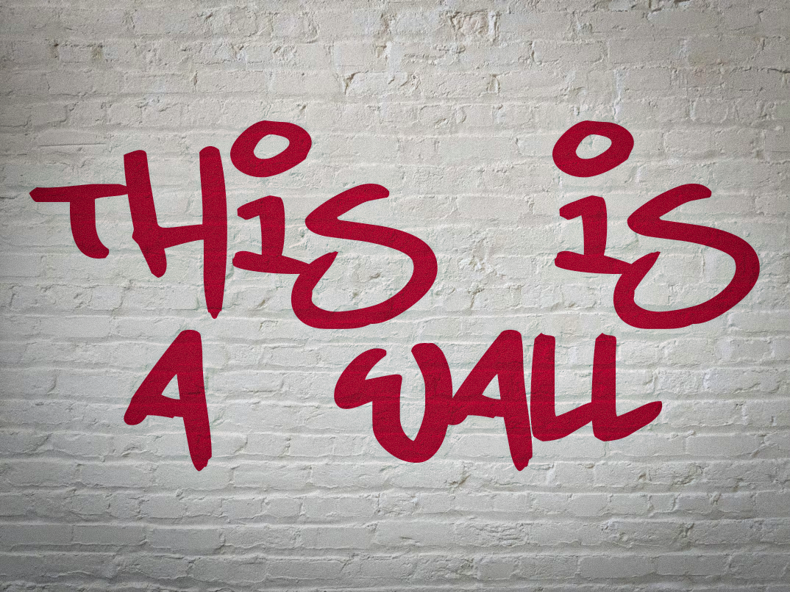

Module 016: Intellectual Property Remix
A practice of responsible reuse, transformation, and attribution.
THEA3135, Richard Lau
Remixed Image

Reflection
In this remixed image, I added text in a graffiti font, as well as some photo effects such as vignette, grians, and texture. I chose a blank white wall because it gives real word textures while allowing for easy editing. The photo was under the Unsplash License, meaning it allowed me to download, copy, modify, and use this image from Unsplash for free, without permission from the photographer or Unsplash.